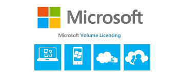

Приобретение программного продукта - это приобретение лицензии (права) на его использование. Для каждой используемой программы необходима лицензия. 100 Когда пользователь приобретает ПО, то, в отличие от других товаров, он не обладает неограниченными полномочиями по его дальнейшему владению, использованию и распоряжению.
Схемы лицензирования программного обеспечения:
1. OEM. Предустановленное программное обеспечение. Original Equipment Manufacturer - наиболее дешевый вариант приобретения лицензии. Программное обеспечение должны быть куплено в составе компьютера или сервера и может быть использовано только совместно с ним.
2. Full Package Product (FPP). Коробочные продукты, пакетное лицензирование. Применяется частными лицами или малым бизнесом (до 5 персональных компьютеров). Правило лицензирования: 1 компьютер - 1 коробка. Коробочные и ОЕМ-лицензии содержат «Лицензионное Соглашение Конечного Пользователя» (EULA - End User License Agreement), где фиксируются условия лицензии. Оно может поставляться в бумажном или в электронном виде с дистрибутивом программы. Устанавливая программу на устройство, пользователь автоматически соглашается с условиями EULA.
3. Volume Licensing. Корпоративные лицензии. Для компаний, которым необходимо приобрести большое количество лицензий, допускается приобрести одну именную лицензию (документ, в котором содержится информация о заказе: покупатель, перечень программного обеспечения, ключи для инсталляции ПО). Компания может получить скидки за объем заказа, расширенную техническую поддержку и т.п.

4. Subscription. Подписка. Оплачиваются ежегодные платежи, при этом каждый год можно менять количество лицензий на различные продукты. Преимуществом подписки являются низкие единовременные затраты. Почти у всех производителей программного обеспечения есть специальные цены для лицензирования государственных и образовательных учреждений. Целью таких акций является привлечение будущих клиентов из числа нынешних учащихся. Примером является программа университетской подписки Microsoft Developer Network Academic Alliance (MSDN AA), в рамках которой предоставляется бесплатное ПО преподавателям и студентам. Программное обеспечение, полученное в рамках подписки MSDN Academic Alliance, может быть использовано только в некоммерческих - научно-исследовательских и учебных целях. Программное обеспечение может распространяться на условии открытого кода (OpenWare), или же без такого условия. При распространении ПО на условиях открытого кода правообладатель передает пользователю также исходные коды программы. Пользователю может предоставляться право модифицировать исходные тексты в целях их переработки и совершенствования. Последующее использование полученных в результате такой переработки программных продуктов различается в зависимости от вида лицензии.
Условие OpenWare не означает бесплатности ПО. Наиболее распространенные группы типовых лицензий на передачу программного обеспечения с открытым кодом: 1) GNU GPL (General Public License) все программные продукты, полученные в результате переработки или модернизации распространяемого на таких условиях программного кода, также могут распространяться далее только на условиях GNU GPL. 2) FreeBSD (лицензия университета Беркли) программные продукты, полученные в результате переработки предоставленного программного кода, могут распространяться на любых условиях, в том числе и на возмездной основе. Лицензии на распространение ПО, не содержащие условия об открытости исходных кодов, более разнообразны, однако практически во всех таких лицензиях содержится запрет на любую модификацию программного кода.
Виды лицензирования можно также различать по условию возмездности:
1. Бесплатное программное обеспечение (FreeWare). Разновидности бесплатного ПО: Free (бесплатное использование и распространение с запретом на внесение изменений в код), Free GPL (с возможностью изменения кода), Adware (бесплатная программа с дополнительными компонентами, например, с рекламой).
2. Условно-бесплатное ПО: пользователь получает возможность бесплатно использовать программу в течение ограниченного времени (Trial) или предоставляется функционально ограниченная версия программы (Shareware). Еще один вариант Demoware – демоверсия (ПО не имеет функциональных и временных ограничений, но ограничения накладываются на результат, например, его нельзя сохранять; ограничения снимаются при оплате ПО).
3. Коммерческое ПО: пользователь должен оплатить программный продукт, причем ему предоставляется значительно больший объем гарантий и обязательств правообладателя, чем в лицензиях на бесплатные или условно-бесплатные программы.
Лицензионные права различаются для разных категорий продуктов
1. Персональные операционные системы, настольные приложения, игры, мультимедийные программы лицензируются по принципу одна лицензия на один компьютер.
2. Средства разработки лицензируются по принципу одна лицензия для одного физического лица.
3. Серверные продукты используют две схемы лицензирования: лицензирование сервер/клиент (серверная лицензия для установки на сервер плюс клиентские лицензии для устройств или пользователей, обращающихся к службам сервера) и лицензирование на процессор (процессорная лицензия для каждого процессора сервера).
Схемы лицензирования ПО могут существенно различаться у разных производителей. С развитием компьютерного оборудования и программного обеспечения усложняются схемы лицензирования. Наиболее известные компании– разработчики программных средств управления лицензиями: Agilis Software, IBM, IntraWare, Macrovision, SafeNet и др.
Примеры бесплатного программного обеспечения (FreeWare): аудиоплеер AIMP 3.60 Build 1479, функциональный офисный пакет для устройств на Android WPS Office 6.5.2, видеоредактор для создания и редактирования видеоклипов VSDC 2.3.1 и т.д. Примеры условно-бесплатного ПО: программа для создания PDFдокументов PDF Maker Pilot; программа для генерирования устойчивых к подбору паролей и их защищенного хранения на ПК Password Manager 3.81; программа для записи видео роликов с экрана компьютера LiteCam HD 5.0.0.5 и др.
Примеры коммерческого ПО: это практически все наиболее известные и используемые программные продукты - Антивирусное ПО Лаборатории Касперского, офисные пакеты Microsoft Office, операционные системы семейства Windows и т.д.
Как следует действовать в Интернете, чтобы избежать нарушения авторских прав?
1. При скачивании контента выясните, разрешается ли его распространять бесплатно. Платный контент можно приобрести, в том числе, в официальных интернет-магазинах.
2. При приобретении контента на дисках и других носителях проверяйте защищенность упаковки, наличие голограмм и информации о производителе и издателе.
3. Прежде чем совершить покупку, узнайте по возможности больше информации об авторах и производителях продукта, об официальных распространителях продукции, о рекомендуемых ценах. Если вам предлагают продукт по цене значительной меньше установленной, то вероятнее всего вы имеете дело с мошенниками, незаконно продающими авторскую продукцию без ведома правообладателя. Не позволяйте вовлечь себя в противоправную деятельность.
4. Уважайте труд авторов и не поощряйте преступные действия.